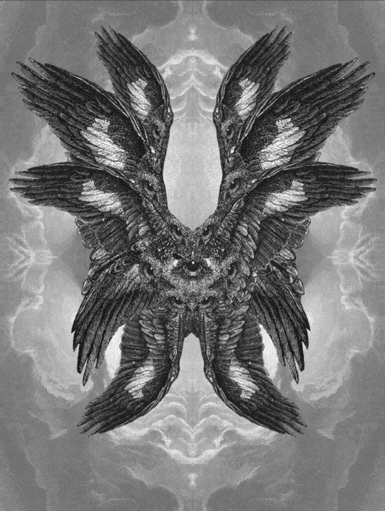

| Home | Oblique Process | Reading #1 | Mod & Tesselation | Reading #2 | Fusion | Signs | Reading #3 | Artifact |
|---|
1) From the podcast, how has our understanding of what dinosaurs really look like evolved? Describe the progression of how we portrayed them and how might this affect our understanding of what Archeology is saying about them.
Our understanding of the physical characteristics of dinosaurs has changed from depicting them as these reptile creatures as seen in many films, for example, Jurassic Park, to now discovering that the skin and fat of dinsosaurs were broken down, they had evolved from birds, and they were intelligent creatures. This affects our understanding of what archaeology is saying about them because we now know that we do not get the full accurate depiction of what dinosaurs look like with just their remains.
2) The artist/archcologist John Conway who is doing interpretations of dinosaurs is obviously taking liberty with what could be the actual truth of how these creatures existed. What other disciplines and forms of studies use similar techniques that reminds you of this method or process. Please elaborate with your examples both written as well as image and links.
The people who follow Christianity, Catholicism, and other religions follow this technique. They base the imagery on old texts like the bible but they get different visual results. Nobody accurately knows how heaven, angels, or any religious being looks like yet we still have depictions of them.
Link 13) First, summerize in your own words the characteristics of 'Material Speculation' as described in the second article. So given this article's examples for possible future products, how can this same technique also be used to create objects that refer to the past?
It is a theorized artifact that has been designed for specific uses for an alternate world, and it has been brought to existence to connect the alternate world to our own. Something that reminds me of this technique that also creates objects that refer to the past is in movies like Men in Black when they used the Playstation 2 controllers to steer the car.